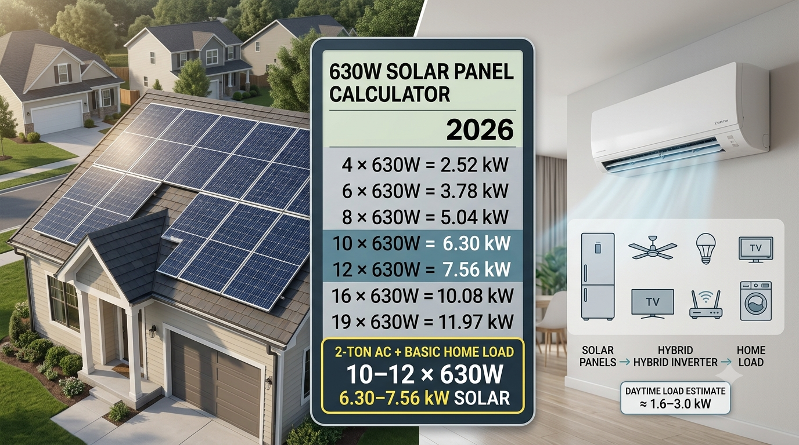

SolarRateHub
SolarRateHubUSA SOLAR GUIDE · August 31, 2026
630W Solar Panel Calculator: How Many Panels Do You Need for a Basic Home + 2-Ton AC in 2026?
If you are planning solar for a U.S. home in 2026, one of the most practical questions is simple: how many solar panels do you actually need to run your everyday household load and a 2-ton inverter air conditioner?

How Many 630W Solar Panels Do You Need?
A 630W panel produces 0.63 kW of nameplate DC capacity. The calculation is straightforward: multiply the number of panels by 630 watts.
| Panels | Nominal Solar Capacity | Typical Planning Use |
|---|---|---|
| 4 × 630W | 2.52 kW | Small daytime loads |
| 6 × 630W | 3.78 kW | Basic home load; limited AC support |
| 8 × 630W | 5.04 kW | Basic home + one 2-ton inverter AC in favorable conditions |
| 10 × 630W | 6.30 kW | Good practical starting point |
| 12 × 630W | 7.56 kW | More daytime headroom |
| 14 × 630W | 8.82 kW | Heavy daytime household load |
| 16 × 630W | 10.08 kW | Large home or higher consumption |
| 19 × 630W | 11.97 kW | 12 kW-class residential system |
What Does a Basic Home Load Look Like?
A basic household load can include LED lighting, ceiling fans, a refrigerator, television, Wi-Fi equipment and other small appliances. The actual total changes from home to home.
| Appliance | Illustrative Running Load |
|---|---|
| 2-ton inverter AC | ~1.0–1.9 kW depending on operating conditions |
| Refrigerator | ~0.15–0.30 kW while running |
| 4–6 ceiling fans | ~0.25–0.45 kW |
| LED lighting | ~0.05–0.10 kW |
| TV + Wi-Fi + small electronics | ~0.15–0.25 kW |
Using those illustrative values, a home running the AC plus these basic loads could be around 1.6–3.0 kW at a given moment. Actual consumption varies by appliance model and operating conditions.
Can 8 × 630W Panels Run a 2-Ton AC?
Eight 630W panels provide a nominal 5.04 kW DC array. In strong sunlight, that is potentially enough solar capacity to support a 2-ton inverter AC and a basic household load, but solar panels rarely deliver their nameplate rating continuously.
Cloud cover, heat, shading, orientation, soiling, wiring and inverter losses can reduce real-time output. An 8-panel system therefore should not be treated as a guarantee that the AC will run entirely from solar in every condition.
Why 10–12 × 630W Is a Better Planning Range
Ten 630W panels provide 6.30 kW DC, while twelve provide 7.56 kW DC. This gives the system more headroom for normal household loads while the AC is operating.
For many homes, 10–12 panels is a more comfortable starting point than sizing the array directly to the AC's minimum running draw. A final design should be based on annual energy consumption and the home's expected solar production, not just the AC label.
What About a 12-Panel 630W System?
With twelve 630W modules, the nominal array is 7.56 kW DC. This is a strong residential size for a home that wants to operate one 2-ton inverter AC along with ordinary daytime appliances.
If you also plan to run an electric water heater, oven, dryer, large pump or multiple air conditioners at the same time, the required inverter and solar capacity may be considerably higher.
Do You Need a Battery?
A battery is not required simply because you have a 2-ton AC. If the goal is daytime solar use, the AC can consume solar electricity as it is generated. A battery becomes more useful when you want to shift solar energy into the evening, reduce grid purchases after sunset or maintain selected loads during an outage.
For example, a 16 kWh battery can store substantial energy, but 16 kWh is an energy capacity—not a guarantee that the battery can continuously deliver 16 kW. The battery's continuous discharge rating and inverter capability also matter.
How Many Panels for a 2-Ton AC at Night?
Solar panels do not generate useful electricity from sunlight at night. If you want the 2-ton AC to run after sunset, you need grid power, a sufficiently sized battery, or another generation source.
The battery should be sized according to how many hours you want the AC and other loads to operate. A home using roughly 2.5 kW at a given moment would theoretically use about 5 kWh over two hours, before accounting for conversion losses and reserve capacity.
630W Panel Calculator: Quick Reference
| Goal | 630W Panels | Solar Capacity |
|---|---|---|
| Basic lights and fans | 4–6 | 2.52–3.78 kW |
| Basic home + 2-ton AC | 8–10 | 5.04–6.30 kW |
| Basic home + 2-ton AC with more headroom | 10–12 | 6.30–7.56 kW |
| High household daytime load | 14–16 | 8.82–10.08 kW |
| 12 kW-class system | 19 | 11.97 kW |
What Inverter Size Should You Consider?
The inverter should be selected from the actual simultaneous AC load, not simply the solar-panel count. For a home with one 2-ton inverter AC and basic appliances, a suitably designed 5–8 kW hybrid or grid-tied inverter may be considered depending on the home's other loads. A larger 10–12 kW inverter makes more sense when the household has multiple large loads or a larger solar-plus-battery system.
Always check the inverter's continuous output, surge capability, MPPT voltage/current limits and local electrical requirements. Explore our Solar Inverter Rates hub for model-level information.
What Can Change Your Required Panel Count?
- Location: Solar production varies by region and season.
- Roof orientation: Direction and tilt affect production.
- Shading: Trees and nearby structures can reduce output.
- Temperature: Panel output changes with cell temperature.
- AC efficiency: Inverter-driven air conditioners can modulate their power draw.
- Household consumption: Additional appliances can substantially increase demand.
- Battery strategy: Evening and backup requirements may require additional storage and generation capacity.
How to Calculate Your Own Solar Requirement
- Review the last 12 months of electricity bills and find your annual kWh consumption.
- Estimate how much of that electricity you want solar to supply.
- Estimate the 2-ton AC's real-world energy use from its specifications and expected operating hours.
- Use your location's expected solar production to size the array.
- Choose an inverter with enough continuous AC capacity for your simultaneous loads.
- Add battery storage separately if you want nighttime use or backup power.
- Get a site-specific production estimate from an installer before purchasing.
Bottom Line
For a basic U.S. home load plus one 2-ton inverter AC, 10–12 × 630W panels (6.30–7.56 kW DC) is a useful 2026 planning range for daytime operation. Eight panels may work in favorable conditions, while larger homes and heavier appliance loads may need 14, 16 or 19 panels.
The most important point is that there is no universal panel count for every home. Use your actual electricity consumption, AC specifications, local solar resource and inverter limits to finalize the design.
Frequently Asked Questions
How many 630W panels do I need for a 2-ton AC?
A practical starting range is around 8–12 panels, depending on the AC's actual draw and other household loads. Ten to twelve panels provide more daytime headroom.
How much power do 12 × 630W panels produce?
The nominal DC capacity is 7.56 kW. Real-time output varies with sunlight, temperature, shading, orientation and system losses.
Can 19 × 630W panels make a 12 kW system?
Yes. Nineteen 630W panels equal 11.97 kW DC, which is appropriately described as a 12 kW-class solar array.
Can solar panels run a 2-ton AC at night?
Not directly. You need grid electricity or stored energy from a battery for nighttime operation.
Related SolarRateHub Guides
Solar Panel Prices · Solar Inverter Rates · Solar System Prices · Solar Calculator
Disclaimer
All load figures in this article are illustrative planning estimates, not guarantees. Actual AC consumption, solar output, inverter performance, battery runtime and required panel count vary by equipment, climate, site conditions and electrical design. Verify equipment specifications and local requirements before purchasing or installing a solar system.